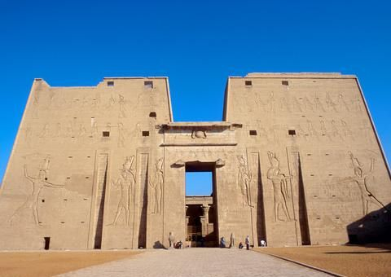
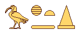
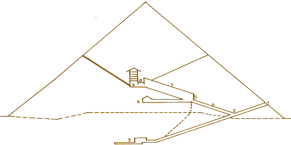

The Book of the Dead
Egyptologists hastily christened one of the largest registers of deaths in Egypt as ‘The Book of the Dead’. The exact title of these long rolls that were placed at the feet of the mummy is in fact ‘Chapters of the Departure into the Light’. For the Egyptians, light is hidden in the heart of hieroglyphics. These phrases are said to be the most ancient tradition from the Divine Thot himself. The originals can be found in a crypt at his temple, Hermopolois Magna in a very fine lapis-lazuli block that serves as a base of the statue of this god of Knowledge. To speak of light here is synonymous with source, that which ties and unties the knot of life and death. In conclusion, a right of passage through ‘secret remembrance’, where destiny plays with what will become of the being. A destiny that is neither finished nor sealed. The start of a new curve on the spiral.
Historically, the texts of The Book of the Dead appear at the beginning of the New Empire, under the XI dynasty. The first version is named ‘The Register of Thebes’ because it was recorded in the town of the Princes who, after having chased out the Hykos, re-united the two kingdoms and made Waset-Thebes the new capital of the Empire.
As with the texts on the pyramids and the sarcophagus, other great works to record the dead, they are not built around a central concept or idea. We can find within them a mish-mash of scattered lists, citations, funeral texts, magic spells, hymns, moral precepts and a guide for the beautiful called ‘Paths of the Amenti’, which is a method to achieve the metamorphism necessary for a kingdom uncertain of death.
According to Egyptian logic each person could dip into the lists and chapters that concerned them the most. We never find two books of the dead exactly the same since a large part is always left to the freedom of choice of everyone concerned by these magic spells.
Moreover, there also exists a second version of these texts called ‘The Register of Saite’, which gives us around 165 chapters. This record was created in the ‘Saite’ period around the year 650 under the reign of King Psammetique. This particular scroll was written by Ioufankh and is currently housed at the museum of Turin. The lengths of its chapters can vary from a couple of lines to fifteen pages but none of which are preceded by a heading to give us a more coherent idea of what was being recorded. Thus chapter CXLII is titled ‘ The Book to Glorify the Blessed to Allow the Smooth Path of Those that are Going out unto the Light in whatever Form they Desire’. The heading for chapter CLIV is ‘A Formula for Not Letting the Body Perish’
There exist numerous interpretations of The Book of the Dead. The most reliable, because it is the most honest and most close to the Egyptian way of thinking is that of Paul Barguet. This Egyptian specialist has translated a more thorough version of 192 chapters dating from the Ptolemaic period and whose first translation was by the German Lepsius.
In order to further understand this complex record, we can divide it into four parts- Chapters I to XVI: The departure into the light
- Chapters XVII to LXIII: The regeneration
- Chapters LXIV to CXXIX: The transfiguration
- Chapters CXXX to CLXV: The glorification of Death
Extract:
« I am the serpent Sata whose years are infinite. I lie down dead. I am born daily. I am the serpent Sa-en-ta, the dweller in the uttermost parts of the earth. I lie down in death. I am born, I become new, I renew my youth every day. »

The First Venture into the Tomb of Thotmes III
- The First Hour
An anubian light surrounds all. It is not exactly day nor is it night. The orange globe of old Atoum is somber in the western sky. In this fleeting moment the passage is bathed in an unusual atmosphere and when the darkness finally envelops the flesh of Af, the sun dies and a light wind rises. The body is laid out on a long Mesketet boat. Nine cynocephalus and twelve goddesses come to welcome this lost child in the hostile vastness of a seemingly victorious death. His body black, mummified, wearing a sun crown on his ram’s head. The journey begins, crossing a timeless zone that belongs neither to the kingdom of life nor that of death. The servants of the bound god march in silence on the riverbanks.
- The Second Hour
They embark at the green and fertile region of the Holy City and the Necropolis of Abydos. Here for the first time a god has cheated death; his name, Osiris-Khentimentiou, God of the West. In the small fields furrowed by carefully irrigated canals, the faithful servants of the dead are finishing gathering, in the shade of palm trees, a celestial harvest. Traveling through this idyllic country, the boat and its mysterious navigator wake up to cleanse themselves with the vegetation and thus reactivate the cycle of the seasons. The journey is peaceful. Isis and Neophytes, transformed into Cobras have taken their place on the boat.
- The Third Hour
In the silence, we hear the pounding and rapid steps of the Massacrists, genies charged with getting rid of and killing the enemies of the Black Sun. They advance to stop the boat’s progression. Their efficient efforts assure the passage of the divine nave and so the Massacrists lament, watching the boat move off into the distance towards the domain of Osirise, singularly capable of assuming eight different forms (a probable reminder of Ogdoade, hermopolitan of Thot).
- The Fourth Hour
We enter the Kingdom of Sokhar, an arid desert infested with snakes with both spread wings and legs. These creatures dominate the four elements and make navigation perilous. To escape them, the boat transforms itself into a snake and undulates on the sand. They break through, spat at by the snakes. The moment is so dramatic that Maat and the beetle Khépri leave their kingdom of the stars to blow the boat towards its fate. The journey is direct and a single breath is as forceful intrusion.
- The fifth Hour
Sokkar composes himself in the dark in front of “the Pillar of the Gods”, a gate which must be crossed without hope of return. For Af, it’s the moment to make a definitive choice: to give up or to pursue in this dark and inhospitable land where the dunes of burning sands are as many as the obstacles to overcome. Seven lunar gods and goddesses raise up to guide the boat and give it hope. The beetle Khépri’s wings hum in the restored silence.
There is nothing Sokar can do; his features impassive like that of a sphinx. In the canal drift heads without bodies and bodies without heads. It is those who dare not confront the sphinx who pose the question of justification.
- The Sixth Hour
The pilgrimage continues. After Abydod and Sakhara, the boat heads for Busirus, the other city of Osiris at the heart of the Delta. These necropolises have so many thresholds that if one wants to break through one must do so without turning back, without fear and filled with tremendous hope. In these parts, all is fluidity and movement, time and space are diluted. Between planes lie man-eating snakes, which only the magic of Thot can fend off. When the god Ibis presents the two Oudjats, they take flight and thus reappears the hierophant of future metamorphisms, Khépri.

- The Seventh Hour
Apopis, the most formidable enemy has yet to be confronted. Here, it comes closer and closer. A gigantic snake, spitting incandescent venom capable of making the waters of Noun evaporate. So much so that the boat keels over on the riverbank where its fragile occupant will be the prey of the creatures of darkness.
The incantations of the magician Isis are the only recourse against this dragon. Her words push back Apopis and weave around the navigator god like the meandering of a long snake, from which henceforth will guarantee the protection of the Black Sun.
Finally, twelve stars (the twelve faces of Horus) appear in the sky to guide the pilgrim towards eternity.
- The Eighth Hour
In the sides of the mountains some caverns open to reveal the tombs of the nine gods of Ennead of Heliopolis. They do not move; inert; they are mummified; they await their future; they are the witnesses of a miracle. They awake at the passage of the boat, yet their mouths remain sealed since mere words cannot reveal the mystery. Only the experience of the journey allows them to approach.
- The ninth Hour
Guided by the twelve stars, the boat crosses the fertile domain of Osiris marked by its vegetation. Directed by a mummified god, nine growers vigorously intersect the traveler in the fields of the green god, presenting him with plants and trees. It is the beginning of the resurrection of the regeneration.
- The Tenth Hour
A change of direction. We turn south to the luminous, solar region of Helipotis. Af, purified by the fire and water, becomes the unborn Kepri. The snake, Mehen, entwines itself around this body, which is in the process of being reborn. A falcon hovers above the boat. The cynocephalus of Thot recognize the god and present the Oudjats to him. The limpid waters are split where those who have already bathed in the light of the east peacefully frolic.
- The Eleventh Hour
There is one final test for them to be submitted to: to cross a territory littered with hot fires where all enemies are consumed. The Hell of the Ungodly. In the sky the stars of the Tortoise constellation sparkle, the place of rebirth. The day is about to break. In the freshness of the northern breeze, which rises, before the boat the disc reddens from the return of the sun.
- The Twelfth Hour
Having entered through the tail of a giant snake, Af appears in the form of a beetle. The annubian light stands aside of the dawn. Twelve zealous servants hoist Madit, the morning boat, to the east, whilst the former body of Af is leant against a sand dune. This marks the extreme limit of the journey. The black sun has missed the annihilation, taking in its wake all the followers of the light. A new journey begins, a new odyssey towards the zenith. Thotmes is regenerated. The son of Thot belongs to the family of the untiring stars.

The Great Pyramid of Kheops
How many men have pondered the most famous and visible Egyptian monument: The Great Pyramid of Giza, otherwise known as the Pyramid of Kheops. Strictly speaking, it is only a tomb amongst others, the last resting place of a IV dynasty ruler. All the planet’s dreamers have vigorously opposed this dry interpretation. They have proposed other hypotheses for this gigantic monument: an astrological clock, a book of stone for the future; more revealing than the obscure ‘Centuries’ of Nostradamus. Everything has been considered. Let us try to get back to the idea of the Great Pyramid as an initiation temple of the Heliopolitan system. The monument could have been erected at a period where the solar belief of Heliopolis dominated the Egyptian World: at the beginning of the Ancient Empire. From all evidence, it cannot just be a tomb, which did not need special inner fixtures. This is unheard of in the history of the Egyptian Pyramids. Before entering the sanctuary where the mystery of the great initiation was achieved, let us return a little to the symbolism of the pyramid.
This sacred monument is firstly in the image of the primordial mountain. It symbolizes the eastern and western horizons. Each morning, the sun appears above the eastern hill. Each evening it hangs over the western hill. A holy place, we consider it as the resting place of the gods. It is normally embroidered with a pyramidian; a golden snake with a solar fire. There never seems to have been one for the Great Pyramid. The name the pyramid MER. MER means equally; the canal of irrigation, the tool of the laborer and the verb to love. So many energy currents that flow freely and maintain life.
Each pyramid has a name since it is considered as a living being, an animated body, composed of its nine elements. Thus, the Great Pyramid is ‘The pyramid where the sun rises and sets’.

If we dig deeper into the symbolism of the pyramid, we find it is a part of the solar astral, as a sunray that devours its shadow. When the pyramid is a tomb, which is the case except for that of Khiops, the corpse is bathed in a ray of light. Thanks to the ascending geometry of the monument, it could in terms of its underground expedition, be used as a real staircase to launch oneself towards the sky, to clear a path towards the stars, towards the ‘Nepher’ or ‘Perfection’.
As for the Great Pyramid, the mystics see it as the “KA”, the central point of the universe, the neutral place where all forces balance, so that the very essence of mystery reveals itself. The monument actually plays a double role.
- It immortalizes the in temporal knowledge of the initiated.
- It is the solar temple of initiation.
The knowledge is inscribed in the architecture of the monument.
- The entrance is to the north in the direction of the pole star of the period; Tuban of the Dragon. For the Egyptians, this star is the vital source.
- The base perimeter measures 365, 24, 24, which is the exact year of the pyramids origin.
- The base of the pyramid is a square expressing the work on the cubic stone which initial enquiries find perfect.
- The four angles determined by the square correspond to the four directions of the world, in ideal miniaturized form. We should note that the Great Pyramid is perfectly positioned in relation to the four cardinal points.
- The triangles of the pyramid convey the solar crossing and the light of the zodiac.
So here we are at the threshold of the Great Pyramid as a temple of initiation. The interior plan below numbered one to nine will allow you to follow the journey of the candidate, in the temple so perfect that the mystics have never believed the initiation theory. Let us remember that nine, the number of Heliopolis expresses the whole of creation. Ennead and the Absolute. The journey in the temple is divided into nine stages; nine slabs of stone make up the ceiling of the royal bedroom.

1At nightfall the initiee is led to the foot of the pyramid where he undergoes a first interrogation. After having crossed the threshold to the north and made a quick descent into the darkness, to 28 degrees, he penetrates Douat or Hades.
2 If his answers are conclusive, he descends unto the crossroads where the tribune of the initiees sits. The second interrogation is a judgment whose symbolism is more attune to that of psychostacy. The initiee is rushed towards the narrow passageway, which leads to the underground bedroom, den of Soker. This corridor is called the “false path”.
3 This den is dug into the exact axis of the monument. The Womb materia prima, it channels the earth’s energies, which the spirit sucks downwards. The test is hard.
4 If the initiee manages to overcome it and he declares once more, as at each stage, his willingness to continue, he retakes the false path and returns to the crossing and begins his ascension to the darkness where here and there, luminous isles quake. The ascending corridor, whose inclination is 28 degrees, is called “The Path of Truth into the Darkness”. After the regression, it represents the evolution, the elevation of the spirit. It is also the domain of Maat, where the initiee is guided by the voice of his conscience and his intuition.
5 Having arrived at the second crossing, another choice has to be made and another interrogation takes place. The science of Thot-Hermes doesn’t tolerate second-guessing; it involves a lengthy apprentiship and wide experience. The future follower must prove he has assimilated the seven principles that rule the universe. Her we find ourselves in a horizontal corridor where we feel a sense of balance. He heads for the bedroom of the queen.
6The bedroom of the queen. Egyptologists have called it thus; the small singular room whose real name is “the bedroom of Restau”, the place where the god prepares his resurrection. This bedroom of the rebirth is not in the axis of the monument. If the initiee renounces the royal initiation he will go no further. If he decided to continue, he is taken to the second crossing and begins the ascension to the Great Gallery.
7 The Great Gallery. Its proper name “The Large Degree”, as is revealed in the Book of the Dead, “The Path of Truth into the Light” following to the first ascending corridor (The Path of Truth into the Darkness). This vast corridor reenacts the ascending journey from the sun to the place of resurrection. Focused on his sublime path into his future, the initiee is going to break with the profane world and become a 'follower of Ra’, a cult of Horus.
8 A last obstacle bars his route. At the end of the gallery, a triple granite lock guards the axis to the royal chamber. It is the triple veil of Isis, the place where the spirit and the body are going to merge so that the initiee can bend his spine to cross through the low gate.
9 The candidate now finds himself in the King’s chamber, the place of the royal and solar initiation. This is where the sun appears to the world, in an open tomb where the initiee is lain down. He must relive once more the dangerous nocturnal journey to the black sun, before reaching the eastern mountain and being reborn to a sublime existence, completely devoted to the divine.
‘What was closed has been opened.
Those who were gestating in death have been released’
The initiee has moreover become a son of Thot-Hermes in the great illuminated gallery; he is welcomed by his brothers and from his newborn lips these words flow:
“I am in the heart of Ra”

Source : René Lachaud, Magie et initiation en Égypte pharaonique.